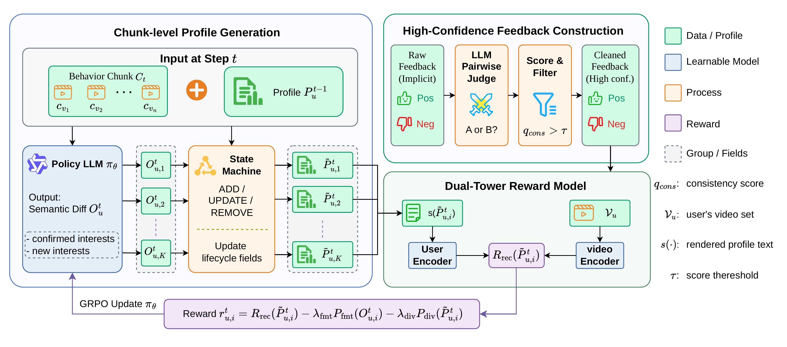
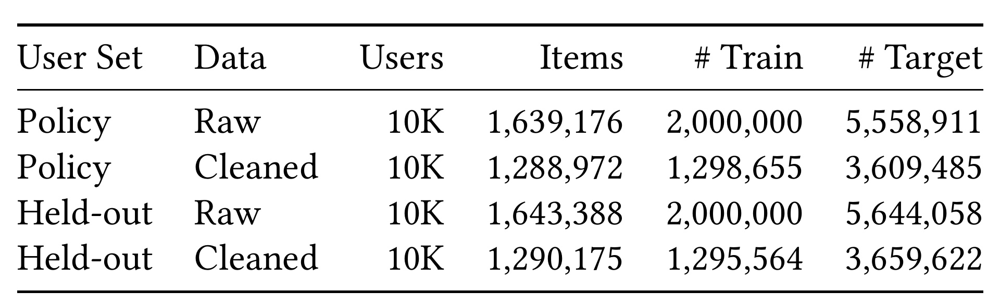
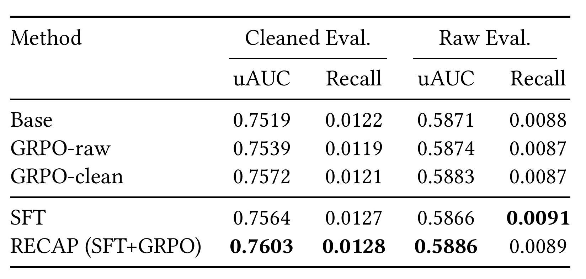
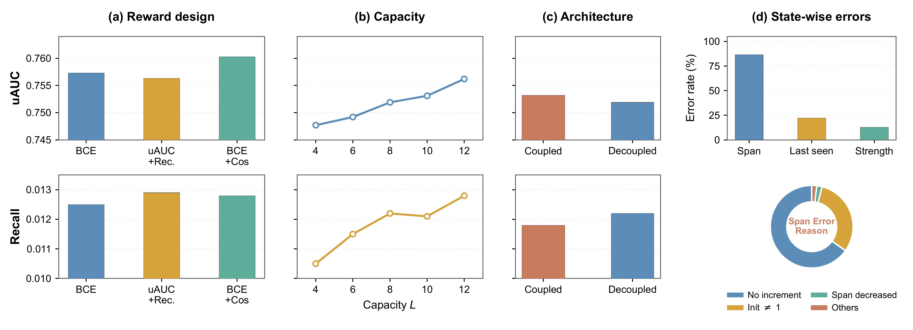
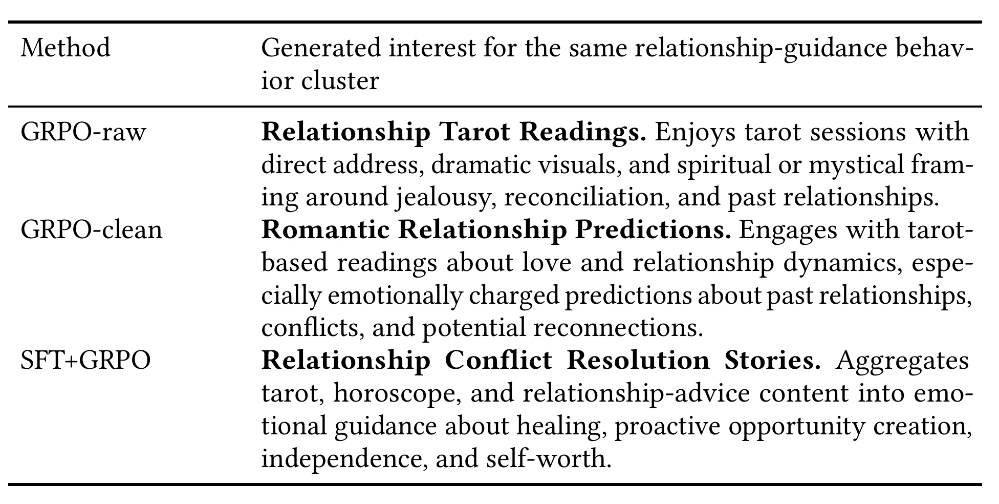
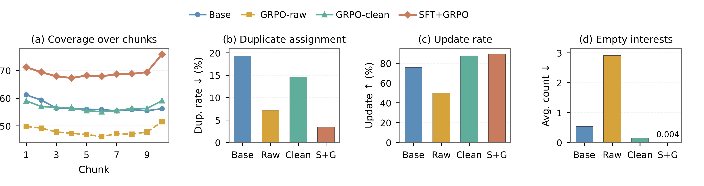
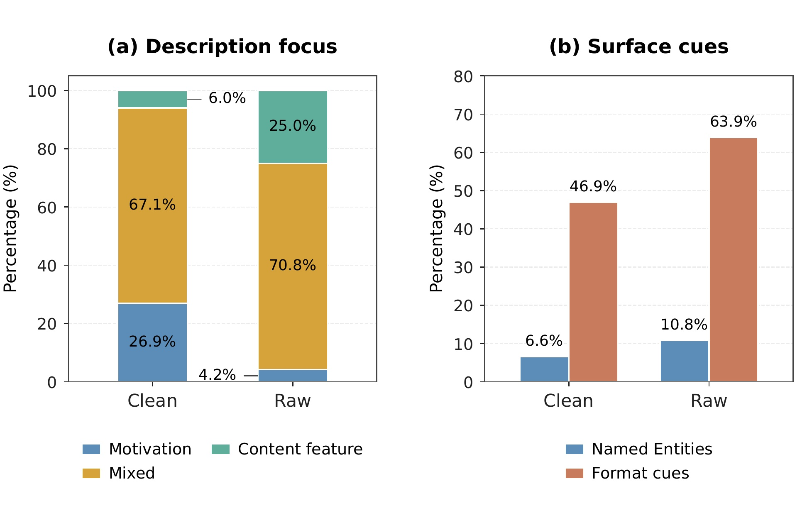

RECAP：用推荐反馈闭环优化短视频流式语义用户画像
论文 RECAP: Feedback-Driven Streaming Semantic User Profiles for Short-Video Recommendation 研究如何把语言用户画像做成随行为流持续更新、容量受限且能够被推荐反馈优化的结构化状态。论文由赵子毅等十六位作者完成，一作来自中国科学技术大学，合作机构包括快手科技与 China Academy of Cyber；论文于 2026 年 7 月 17 日提交，已被 RecSys 2026 接收。原文入口见 arXiv:2607.15730。截至本次核验，arXiv 页面与 PDF 没有给出独立公开代码仓库；论文给出了 ACM DOI，但核心数据、训练流水线与线上实验均依赖私有短视频系统。
现有语言画像可以把历史行为总结得流畅，却通常没有被直接训练成能够改善未来推荐的状态；当短视频行为持续到达且画像容量受限时，真正困难的是同时保持画像长期一致，并从观看与跳过日志中提炼出可信的画像语义反馈。
1. 背景和问题
1.1 从一次性摘要到持续演化的画像状态
传统推荐系统主要把用户表示压缩进 ID embedding、交互统计或行为序列编码器。它们擅长学习“看过 A 的人也会看 B”这类共现结构，却不直接告诉系统用户为什么持续观看某种内容，也难把兴趣迁移到冷启动内容、跨场景召回或可解释的人群分析。语言画像给出另一条路径：把很长的行为历史写成明确的主题和偏好描述，例如“喜欢用故事化方式讲解关系冲突，并关注情绪修复”。这种表示可读、可复用，也能由文本编码器接入现有召回或排序链路。
问题在于，工业短视频并不是一次输入、一次总结的静态任务。用户每次打开应用都会产生新曝光、新观看和新跳过，兴趣既有长期稳定部分，也有短期涌现部分。如果每次从头重写全部画像，几千条行为会迅速超过上下文和计算预算，旧兴趣还容易被最新一批视频覆盖；如果只把新摘要追加到末尾，画像又会无限膨胀并产生重复。RECAP 因此把最多 500 次有效观看按时间切成最多 50 条 caption 的 chunk，让画像以固定槽位状态滚动更新。这里的“有效观看”按生产规则定义为播放超过 7 秒或完整播放；曝光后未达到该条件则作为观测负反馈。
持续更新还引入一个比文本总结更棘手的状态一致性问题。一个兴趣槽不仅要有 topic 和 description，还要知道它被多少轮行为确认、多久没有出现、当前强度如何、应归为稳定兴趣还是最近兴趣。LLM 很适合判断两段内容是否属于同一主题、是否需要合并描述，却不擅长在多轮 JSON 生成中精确维护 span、recency、strength 等数值字段。一个字段少加一次或跨轮回退，就会让淘汰策略失真。论文的关键判断是：语义判断交给 LLM，生命周期和容量治理交给确定性状态机，两者不应被强行塞进同一个生成动作。
1.2 为什么观看与跳过不能直接当作语义奖励
第二个问题是画像 updater 应该优化什么。只做监督微调，可以让输出格式更稳定、描述更像教师模型，却不保证生成的画像对未来推荐更有用。最直接的闭环做法似乎是把生产排序器的分数当奖励，但排序分数混合了 ID、上下文、位置、热度、内容质量和业务策略等大量因素，画像文本只占其中一部分。若直接反向优化，模型可能追逐与画像语义无关的信号，甚至把热门内容误认成稳定兴趣。
原始隐式标签也不是干净的偏好真值。用户跳过视频，可能因为开头节奏、画质、当时场景或已经看过相似内容，而非不喜欢主题；用户观看完成，也可能源于视频很短或自动播放。于是“正样本更符合画像、负样本更不符合画像”并不总成立。RECAP 先让一个 LLM pairwise judge 在用户近期兴趣上下文下比较随机的正负视频，保留 judge 选择与观测标签反复一致的样本，再用清洗后的行为训练画像—视频双塔 evaluator。这个 evaluator 不试图复刻完整生产排序器，只衡量画像文本与视频语义是否能区分高置信观看和跳过。
论文把已有工作分成两条相关却尚未闭合的路线。LangPTune 与 LettinGo 已尝试用下游预测信号优化自然语言画像，但对象主要是一次生成或可选择的自由文本；LIBER 与 HiT-LBM 则把超长历史分段，强调跨段兴趣变化和高质量兴趣路径，却主要把画像当成生成流水线的终点。RECAP 的差异是把画像定义为跨轮继承的有界状态：原始隐式反馈先被转成画像专属语义信号，再反过来训练每一轮的状态写入策略。它并非只是把“长历史摘要”和“反馈优化”拼接，而是要求奖励、状态转移和容量淘汰在同一可执行 schema 下对齐。
这使 RECAP 的研究问题可以准确写成两层：第一层是如何在有限槽位中维护可追踪、可淘汰、可渐进修订的语义记忆；第二层是如何从工业隐式日志提炼画像专属的代理奖励，并用它更新语义生成策略。二者缺一不可。只有状态机而没有反馈闭环，画像仍是开放环摘要；只有奖励而没有状态治理，LLM 可能通过无效 JSON、重复兴趣或不稳定生命周期字段获得偶然高分。
1.3 与推荐系统和大模型记忆的关系
对推荐系统而言，RECAP 不是替换多阶段推荐链路，而是在用户表示侧增加一条语义通道。论文线上方案把最终画像渲染成文本，经 Qwen3-Embedding-0.6B 编码后作为额外特征接入生产 U2I 召回；ID、行为序列和原有召回模型仍然存在。因此离线 uAUC 与 Recall 的改进，应理解为“语义画像能提供互补信号”，而不是语言画像已经独立承担召回与排序。
对大模型记忆研究而言，这篇工作把 memory 的“写、更新、合并、遗忘”落到明确业务反馈上。许多 Agent memory 系统主要依据相似度、时间或模型自评决定保留内容，RECAP 则要求记忆的文本表示能够更好地区分后续有效观看与跳过。这种闭环思路可迁移到个性化助手：记忆不是越详细越好，而要在固定容量内保留对后续决策真正有预测价值的信息。不过，推荐日志是行为代理而非明确意图，后文实验也表明，反馈是否清洗会直接改变画像从“表面内容特征”还是“观看动机”层面进行抽象。
显式画像还让模型误差从“向量难以解释”变成“文本可以审计但也可能固化”。一个错误 topic 会在后续轮次被重复确认，一个过宽 description 会把不同动机合并，而一个过窄槽位又会耗费容量。RECAP 用证据索引和生命周期字段降低这种累积风险，却没有人工持续纠正画像；它依旧依赖模型对 caption 的语义归并。因而论文真正衡量的不是画像是否符合用户自我陈述，而是画像能否在给定 evaluator 中预测未来有效观看。理解这一评价对象，才能避免把可读画像误当成用户真实心理标签，也为后文隐私与偏差讨论划定边界。
2. 方法
2.1 总体闭环：画像更新、反馈清洗与策略优化
RECAP 的输入首先被统一成文本。论文用 Qwen3-VL-8B 离线为每个视频生成结构化 caption：tag 来自 25 类封闭内容 taxonomy，description 是视频内容的简短自由文本描述。对用户 \(u\)，系统取截止时间前最近最多 500 条有效观看，按时间排序后切成大小不超过 50 的 chunk。第 \(t\) 个 chunk 到达时，updater 只读取当前 chunk 与上一轮画像，而不重新读取全部历史；训练阶段再从历史日志学习代理奖励，使最终状态面向未来推荐效用优化。这两个层次分别由式 (1) 与式 (2) 表达：
符号解释：\(P_u^t\) 是用户 \(u\) 处理第 \(t\) 个行为块后的画像状态，\(C_t\) 是第 \(t\) 个按时间排序的 caption 块，\(M=\lceil |H_u|/B\rceil\) 是块数且 \(B=50\)，\(f_\theta\) 是由 LLM policy 参数 \(\theta\) 控制的语义更新函数；\(\mathcal U\) 是训练用户分布，\(P_u^M\) 是全部历史块处理后的最终画像，\(R\) 是由高置信行为训练出的画像—视频效用代理。式 (1) 强调推理的因果顺序，式 (2) 则说明这是离线闭环：反馈影响 updater 参数，但候选画像并未在训练中实时进入生产系统，因此 \(R\) 的可信度直接决定优化方向。

Figure 1 从左到右给出三条互相咬合的信息流。左侧是 chunk-level profile generation：当前行为块与旧画像进入 Policy LLM，模型不输出完整新画像，而是采样 confirmed interests 与 new interests 组成的 semantic diff；每个候选 diff 交给同一个状态机执行 ADD、UPDATE、REMOVE，形成一组可比较的候选画像。右上角把原始观看/跳过反馈送入 LLM pairwise judge，经一致性打分与阈值过滤得到高置信正负样本。右下角的双塔模型分别编码渲染后的画像和视频 caption，把两者映射进共享语义空间，并对每个候选画像给出奖励。最下方紫色路径把推荐奖励、格式惩罚和兴趣多样性惩罚合成为 rollout reward，再通过 GRPO 更新 Policy LLM。图中最重要的边界是：状态机、judge 和 evaluator 都不随 updater 的每个 token 共同生成；它们分别承担可执行性、标签清洗和效用估计，使 LLM 的学习问题被压缩为“产生更好的语义 diff”。
2.2 有界结构化记忆：语义 diff 与状态机分工
画像 \(P_u^t\) 最多包含 \(L\) 个兴趣条目，论文默认 \(L=8\)。每个条目有可见的 \((\mathrm{topic}_l,\mathrm{desc}_l)\) 语义对，以及仅由状态机维护的 span、recency、strength 等生命周期字段。stable 条目表示被多轮确认的长期兴趣，recent 条目表示新出现的短期兴趣；渲染成文本时，两组分别放在 Core Interests 与 Recent Interests 下，以 topic: description 形式供双塔和下游推荐使用。LLM 只看到排序后的语义对，不看到生命周期数字，避免它在生成时“顺手修改”状态。
updater 对每个 chunk 只返回结构化 JSON：confirmed_interests 引用已经在画像中的 topic，可选择修订 description；new_interests 提出当前块中新出现的 topic。每个输出兴趣都必须携带 video_indices，把语义判断锚定到当前块中的支持视频。新增槽位会占用有限容量，因此论文要求一个新兴趣至少由两条视频支持；确认旧兴趣则可以用较弱证据触发。状态机随后执行三类操作：Update 负责匹配旧 topic、更新描述并刷新或衰减生命周期；Add 过滤新 topic 并初始化合格 recent 条目；Remove 重算强度、调整 stable/recent 身份，并在超过容量时淘汰低优先级陈旧条目。整个组合更新可写成：
符号解释：\(\mathrm{LLM}_\theta\) 输出的只是语义差分，\(\mathrm{SM}\) 是无可学习参数的状态机，第二个 \(P_u^{t-1}\) 为状态机提供旧槽位和生命周期字段。训练与推理都使用同一分工；差别只是训练时会为同一输入采样多个 diff 并打分，线上推理通常选一次生成后顺序执行。解耦的价值不在于提高静态离线分数，而在于阻止 span、last-seen 和 strength 在跨 chunk 更新中出现不可追踪错误。
有界画像也改变了“生成质量”的定义。自由摘要可以通过增加更多细节显得完整，但固定槽位要求模型决定哪些兴趣值得占一个位置、哪些描述应合并、哪些长期不出现的主题应退出。如果证据重叠的两个兴趣同时占槽，容量就被浪费；如果新兴趣门槛太低，短期偶然行为会挤走稳定兴趣；如果门槛太高，画像又跟不上兴趣漂移。RECAP 把这些约束显式化，使后续消融能够单独研究容量 \(L\) 和状态机架构，而不是把所有变化隐藏在 prompt 中。
2.3 推荐反馈变成画像奖励：一致性过滤与双塔评价器
反馈构造先处理“标签是否能代表语义偏好”。对于候选交互窗口中的随机正负视频对，LLM judge 读取候选窗口之前的近期有效观看历史，判断用户更可能有效观看 A 还是 B。多次成对比较后，每个 item 得到标签一致性分数 \(q_{\mathrm{cons}}\)，表示 judge 的上下文偏好与日志正负标签一致的频率。论文先找高置信负例，再用这些负例重新评估正例，避免一个语义上其实合理的负例成为错误参照；最终只保留 \(q_{\mathrm{cons}}>\tau\) 的样本，实验中 \(\tau=0.45\)。
清洗后的画像文本与视频 caption 进入双塔 evaluator。ranking head 预测有效观看，contrastive head 用正交互和分布式 in-batch negatives 学习检索式语义空间。联合损失、候选画像奖励与正负余弦间隔分别写成式 (4)-(6)：
符号解释：\(\mathcal L_{\mathrm{bce}}\) 是有效观看标签的二分类损失，\(\mathcal L_{\mathrm{nce}}\) 是正视频与 batch 内负视频的对比损失，\(w_{\mathrm{bce}}\)、\(w_{\mathrm{nce}}\) 在实验中取 1 和 0.1；\(s(\widetilde P)\) 把 stable/recent 兴趣渲染成文本，\(\mathcal V_u=\mathcal V_u^+\cup\mathcal V_u^-\) 是清洗后的正负集合，\(w_{\mathrm{rec}}=1\)；\(e_{\widetilde P}^{c}\)、\(e_v^c\) 是归一化对比头表示。式 (4) 同时训练行为判别和检索语义，式 (5) 把低 BCE 与高正负间隔变成奖励，式 (6) 用两组平均相似度减少样本量差异。评价器训练一次后冻结，GRPO 只能改变画像文本；若 caption 或 judge 有系统偏差，该偏差仍会经余弦间隔传给 updater。
2.4 SFT 热启动与并行 chunk 级 GRPO
策略以 Qwen3-4B-Instruct-2507 为基座，先用 Claude Sonnet 4.5 生成的 8K 个同 schema 示范做 SFT。SFT checkpoint 既初始化当前策略，也冻结为参考策略 \(\pi_{\mathrm{ref}}\)。直接对每个用户的全部 \(M\) 个 chunk 做顺序 rollout 成本很高，论文用 SFT 模型预计算前缀画像 \(\bar P_u^{t-1}\)，把每个 chunk 更新拆成独立训练实例。当前 policy 为 \((C_t,\bar P_u^{t-1})\) 采样 \(K=8\) 个 diff，状态机逐个执行，再把推荐奖励扣除格式与重复证据惩罚：
符号解释：\(O_{u,i}^t\) 是第 \(i\) 个采样 semantic diff，\(\bar P_u^{t-1}\) 是 SFT 预计算的前缀状态，\(\widetilde P_{u,i}^t\) 是状态机执行后的候选画像；\(P_{\mathrm{fmt}}\) 惩罚无效 JSON、错误引用和过长描述，\(P_{\mathrm{div}}\) 惩罚兴趣条目高度重叠的 video_indices，两个 \(\lambda\) 控制惩罚强度。不同用户和 chunk 因而可以并行 rollout，但训练前缀由 SFT 固定，未完全反映当前策略长期滚动的误差累积。输出控制项把高推荐分限制在可执行、紧凑且不重复的画像空间内，而不是允许策略用无效 diff 钻 evaluator 的空子。同一输入的 \(K\) 个奖励随后做组内标准化，再使用 clipped surrogate，并以 KL 约束当前策略不要偏离冻结参考策略过远：
符号解释：\(\widehat A_{u,i}^t\) 是候选相对同组其他候选的标准化优势，\(\epsilon_{\mathrm{std}}\) 防止方差接近零；\(\rho\) 是当前策略相对 rollout 策略的 token 概率比，\(\epsilon_{\mathrm{clip}}\) 限制单步更新，\(D_{\mathrm{KL}}\) 约束到 \(\pi_{\mathrm{ref}}\)，实验取 \(\beta=0.01\)。GRPO 无需单独 value model，适合同一 chunk 多个 diff 的直接比较。训练共 80 步，batch size 64，学习率 \(2.5\times10^{-5}\)，LoRA rank 32。并行训练降低成本，却形成 exposure mismatch：策略只在 SFT 前缀上学局部修改，部署时自己的早期错误会成为后续输入，论文尚未系统测试这种累积偏差。
3. 实验结果
3.1 数据切分、对照模型与评测口径
实验使用快手真实短视频日志，并把用户严格分成互不重叠的 policy set 与 held-out set，各 10K 人。对每个用户，时间轴被切成 profile window、training window 和更晚的 target window：profile window 提供最多 500 次有效观看用于滚动生成画像，平均长度 463；training window 提供最多最近 200 条交互训练双塔；target window 在 policy set 上充当奖励窗口，在 held-out set 上充当最终评价窗口。这样的时间顺序避免了把目标期行为泄漏进画像，但数据是私有采样，用户地域、活跃度分布和内容供给口径没有完整披露。

Table 1 显示反馈清洗并非只丢掉少量异常点。Policy set 的 item 数从 1,639,176 降到 1,288,972，训练交互从 2,000,000 降到 1,298,655，target 交互从 5,558,911 降到 3,609,485；held-out set 也从 1,643,388 个 item、2,000,000 条训练交互和 5,644,058 条 target 交互，降到 1,290,175、1,295,564 和 3,659,622。换言之，cleaned 数据保留约 79% 的不同 item、约 65% 的交互。这个比例说明 judge 的标签一致性过滤会显著改变学习分布；优势是语义信号更集中，风险是困难兴趣、偶发兴趣或与近期历史不一致的探索行为可能被系统性删除。
最终评价固定双塔架构、caption、时间切分、超参数和 held-out 用户，只更换画像 generator。五个变体分别是原始 Base、在 raw reward 上做 GRPO 的 GRPO-raw、在 cleaned reward 上做 GRPO 的 GRPO-clean、只做教师 SFT 的 SFT，以及 SFT 后再用 cleaned reward 做 GRPO 的完整 RECAP。cleaned evaluation 在清洗训练/评价对上训练和测试 evaluator，强调高置信语义对齐；raw evaluation 保留原始隐式分布，检查模型是否只迎合 cleaned 子集。指标是用户级 AUC 与 Recall@2000。前者衡量每用户正负排序，后者更接近候选召回，但二者仍由离线双塔定义，不等价于完整生产排序 KPI。
3.2 离线主结果：清洗反馈与 SFT、GRPO 的互补

Table 2 的主结论集中在 cleaned evaluation。Base 的 uAUC/Recall 为 0.7519/0.0122，完整 RECAP 达到 0.7603/0.0128，绝对提升分别为 0.0084 和 0.0006；后者相对约 4.9%，对应摘要中的 Recall@2000 提升。只做 GRPO-clean 的 uAUC 达到 0.7572，但 Recall 为 0.0121，略低于 Base；只做 SFT 则为 0.7564/0.0127。完整模型同时超过二者，说明 SFT 更像在建立合规、覆盖较好的画像组织，cleaned-feedback GRPO 则继续调整画像与未来视频的语义匹配，两者作用并不相同。
raw evaluation 的排序更克制。Base 为 0.5871/0.0088，GRPO-clean 为 0.5883/0.0087，完整 RECAP 为 0.5886/0.0089；SFT 的 uAUC 只有 0.5866，却给出最高 Recall 0.0091。完整模型的 raw uAUC 比 Base 高 0.0015，说明 cleaned reward 的收益并非完全局限于清洗子集，但 raw Recall 的领先很小，且不及 SFT。因而“uAUC +0.0084、Recall 约 +4.9%”必须明确属于 cleaned evaluation，不能直接外推为线上所有流量上的同量级收益。
GRPO-raw 也提供重要反例：它在 cleaned 口径为 0.7539/0.0119，在 raw 口径为 0.5874/0.0087，均未形成稳定的两指标提升。观看/跳过日志量更大，却不代表奖励更好。raw evaluator 容易把曝光环境、内容形式和用户惯性混入画像语义，策略面对不确定奖励时可以选择不改旧兴趣，或生成没有支持视频、最终会被状态机过滤的空兴趣，从而规避有风险的真实修订。后续画像行为分析直接观察到这一点。
3.3 消融：奖励、容量与状态机解耦

Figure 2(a) 比较三种奖励。只用 BCE 时 uAUC 尚可，但 Recall 低于加入检索语义信号的组合；直接用 uAUC 与 Recall 构造粗粒度奖励提高 Recall，却使 uAUC 下降；BCE+Cos 同时取得最高 uAUC 和接近最高的 Recall。它支持 Eq. (5) 的设计直觉：BCE 约束行为标签判别，cosine margin 让画像在共享空间中真正靠近正视频、远离负视频。值得注意的是，图只比较有限几种组合，没有报告不同 \(w_{\mathrm{rec}}\)、judge 阈值或 reward calibration 的敏感性。
Figure 2(b) 把容量 \(L\) 从 4 增到 12。uAUC 随容量总体上升，Recall 从 4 到 8 明显改善，10 处略有回落，12 再提高。作者选择 \(L=8\)，不是因为它给出绝对最高离线分，而是在兴趣多样性与生成、rollout、编码、检查、维护成本之间折中。这一点对工业系统很现实：每多一个槽位都会增加 LLM 输入输出和画像 embedding 成本，也扩大重复兴趣与隐私暴露面。论文没有给出这些成本的毫秒延迟或资源数字，因此 \(L=8\) 的“服务预算”仍是内部经验口径。
Figure 2(c) 显示 coupled 与 decoupled updater 的离线双塔表现接近，甚至不同指标互有高低；真正差异出现在 2(d) 的状态可靠性。让 LLM 直接生成完整画像时，span 字段错误率视觉上接近九成，last-seen 和 strength 也存在明显错误；span 错误主要来自跨轮没有递增，其次是初始化不为 1，另有 span 回退等情况。由此可见，状态机解耦的贡献不能只看 uAUC：它把画像从“文本看起来合理”提升为“生命周期可执行、跨轮可追踪”。这是工程上比微小离线分差更强的理由。
3.4 画像行为与语义案例：从表面格式到观看动机
论文用 gpt-oss-120b 做额外诊断：在 500 名用户上判断最终画像对历史视频的覆盖，在 500 个采样 chunk 上做语义标注；重复分配、更新率和空兴趣则直接从状态机过滤前的结构化输出计算。这些分析不参与训练奖励，因此能补充主结果，但 LLM judge 诊断本身仍有模型偏好，不能视为人工金标。

Figure 3 比较同一用户、同一“关系指导”行为簇的三种输出。GRPO-raw 写成 Relationship Tarot Readings，把直接对镜、戏剧化视觉、塔罗、嫉妒与复合等表面元素组织起来；GRPO-clean 提升为 Romantic Relationship Predictions，开始围绕爱情关系动态、冲突和可能复合概括；SFT+GRPO 再抽象成 Relationship Conflict Resolution Stories，把塔罗、星座和关系建议合并为“通过情绪指导关注疗愈、主动创造机会、独立与自我价值”。案例说明 cleaned reward 更可能从“视频里出现什么”转向“用户为何持续观看”，SFT 又帮助不同格式共享一个更宽的兴趣槽。不过这只是单用户定性样本，最抽象的描述未必总更利于具体候选区分，过度概括也可能损失细粒度召回信号。

Figure 4 把训练信号如何改变 updater 行为拆成四个维度。完整 SFT+GRPO 在各 chunk 上保持最高历史覆盖，通常约 67% 至 76%，而 Base 与 GRPO-clean 多在中高 50% 区间，GRPO-raw 约在 46% 至 51%；它的 duplicate assignment 又最低，约 3% 至 4%，说明高覆盖不是靠把同一视频重复分给多个槽位。更新率方面，GRPO-clean 与完整模型接近九成，GRPO-raw 约五成；空兴趣数量则从 GRPO-raw 的接近 3 个降到 GRPO-clean 的很低水平，完整模型只有图中标出的 0.004。SFT 因而主要改善覆盖和条目分离，cleaned GRPO 主要鼓励有证据的描述修订；raw reward 则让“不改旧画像”和“提出会被过滤的空兴趣”成为低风险策略。
Figure 4 也暴露一个不能忽略的张力：GRPO-clean 的重复分配率高于 GRPO-raw。作者解释，动机层兴趣可能共同解释相似视频，因此 video_indices 会重叠；raw 画像依赖具体实体和格式，表面上更容易分成互不重叠的槽。换言之，较低重复率本身不是语义更好的充分条件，必须与覆盖、更新率和内容标注一起读。完整模型通过 SFT 把覆盖与分离组织好，再用 cleaned reward 做语义更新，才取得四项诊断中相对平衡的表现。

Figure 5 量化了上述语义差异。在描述焦点上，GRPO-clean 有 26.9% 的兴趣被判为 motivation-focused，67.1% 为 mixed，6.0% 为 content-feature-focused；GRPO-raw 对应 4.2%、70.8% 和 25.0%。clean reward 并没有把大多数画像都变成纯动机描述，但显著压低了只罗列内容特征的比例。在表面 cue 上，clean 画像提及命名实体的比例为 6.6%，raw 为 10.8%；提及视频格式线索的比例为 46.9% 对 63.9%。这些结果支持“标签一致性清洗促使 updater 做更深抽象”的解释，同时也提醒读者：clean 画像仍有近半数包含格式 cue，语义抽象只是统计倾向，不是每个兴趣都发生质变。
3.5 线上 A/B：如何接入生产召回以及证据边界
线上实验在快手海外短视频服务持续七天，10% 流量进入 treatment，20% 进入 control。Treatment 用户的 RECAP 画像被渲染成文本，经 Qwen3-Embedding-0.6B 编码后作为额外特征送入生产 U2I retrieval；control 使用不含该特征的原模型。结果是人均应用使用时长相对提升 0.139%，论文称达到统计显著。这证明画像至少能在现有召回系统上提供可用的增量信号，也把离线“画像—视频语义匹配”连接到了真实用户行为。
但线上证据必须按它的实际范围解释。首先，实验只报告平均使用时长，没有披露点击、完播、留存、负反馈、内容多样性或创作者生态指标，无法判断时长提升是否伴随其他代价。其次，七天不足以验证兴趣槽位在数周或数月中的稳定性，也无法观察状态机淘汰是否造成长期遗忘。再次，treatment 与 control 分流比例不同本身不是问题，但论文没有公开样本量、置信区间、显著性检验方法和实验期间异常处理。最后，线上接入只说明画像 embedding 是 U2I 的附加特征，并未把 GRPO 或 judge 放进在线请求链路；因此论文证明的是离线生成画像的线上效用，而不是在线实时 LLM 更新已经达到可接受延迟。
从证据链完整性看，线上结果与离线实验的角色不同：离线表格负责比较画像生成策略，线上 A/B 只验证最终画像特征在一套生产召回中的增量价值。论文没有进行逐用户画像质量与线上收益的关联分析，也没有说明哪些用户群或内容类目贡献了提升，因此还不能判断收益来自长期兴趣、近期兴趣，还是少数高活跃用户。后续若能报告分桶效果与画像更新频率，将更有助于把方法机制和业务收益对应起来。
4. 总结
4.1 核心判断与可迁移价值
RECAP 最有价值的地方，不是单独把 LLM、双塔或 GRPO 放进推荐系统，而是把三类不同责任拆开：LLM 负责从新行为识别与修订语义，确定性状态机负责有界记忆的生命周期，清洗后的双塔 evaluator 负责给语义 diff 提供面向推荐的代理反馈。离线主结果显示 SFT 与 cleaned-feedback GRPO 互补，线上实验则说明渲染后的画像 embedding 可以作为现有 U2I 的增量特征。这个结论比“用 LLM 生成用户摘要”更具体：画像生成必须有可追踪状态、有行为证据锚点，也要有与下游决策一致的学习信号。
对推荐工程，可直接迁移的设计包括 video_indices 证据绑定、stable/recent 双层槽位、LLM 语义与规则状态解耦，以及 cleaned/raw 两套离线评价口径。对大模型记忆和个性化 Agent，可迁移的是“记忆写入策略由后续任务效用训练”，而非仅按相似度或自评保存文本；格式、容量和重复证据也应进入奖励约束。需要保留的边界是：RECAP 的奖励来自私有隐式行为和特定 caption 模型，不能假定同一策略会自然迁移到电商购买、音乐偏好或对话助手记忆。
4.2 局限与风险
- 复现边界较强。 快手日志、pairwise judge 数据、教师示范、生产 U2I 和线上流量都未公开，代码也未核验到独立仓库。外部研究者最多复刻机制，难复核同一数据分布和线上指标。
- 代理奖励存在多级偏差。 Qwen3-VL caption 的遗漏会进入画像，Qwen3-30B judge 的偏好决定哪些日志被保留，双塔 evaluator 再把这种分布压成奖励；任何一级偏差都可能被 GRPO 放大。
- 清洗可能牺牲探索和少数兴趣。 约 35% 交互被过滤，近期历史不支持但真实的新兴趣、跨主题探索或低频兴趣可能更容易被判为不一致，从而降低画像对突发兴趣的敏感度。
- 长期稳定性证据不足。 训练使用 SFT 前缀做并行局部 rollout，未系统评估策略自身误差在长序列中的累积；七天 A/B 也不足以证明容量淘汰和 stable/recent 转换在长期无漂移。
- 隐私与治理风险。 显式语义画像比匿名 embedding 更容易被人读懂，也可能概括情感、关系、健康等敏感倾向。论文没有给出用户可见、可纠正、可删除或差分隐私机制。
- 成本披露不完整。 视频 caption、成对 judge、双塔训练、8 路 rollout 和画像 embedding 都有离线开销，论文没有报告吞吐、GPU 时长、更新频率或线上缓存失效成本。
4.3 后续跟进与复现实验
首先，可在公开序列推荐数据上构造带文本的最小复现，固定 caption 与双塔架构，只比较 raw/cleaned reward、SFT 和 GRPO，验证 Table 2 的互补关系是否跨域成立。其次，应做更长的流式压力测试：人为注入兴趣漂移、周期性兴趣、突发新兴趣和矛盾行为，跟踪每个槽位的 span、recency、strength、误淘汰率与恢复时间，而不只看最终 Recall。第三，需对 judge 阈值、容量 \(L\)、新增兴趣“两条视频”门槛和 \(w_{\mathrm{rec}}\) 做敏感性分析，并同时报告保留率、少数兴趣覆盖与计算成本。第四，线上验证应扩展到留存、负反馈、多样性、公平性和隐私审计，比较“画像只做召回特征”与“画像进入排序/重排”的边际收益。最后，若代码或 RecSys 正式版本后续公开，应重点核对状态机的精确转移规则、奖励归一化细节和显著性统计，这三处最影响可复现结论。
总体而言，RECAP 提供了一套可信的工业研究范式：不把 LLM 的流畅文本直接当作高质量画像，而是用有界状态约束它、用证据索引审计它、用清洗后的下游反馈训练它。论文已经证明这套方法在特定短视频环境中有离线和短期线上价值；它是否能成为通用的长期用户记忆方案，还需要公开数据、长期实验与更完整的隐私治理来回答。